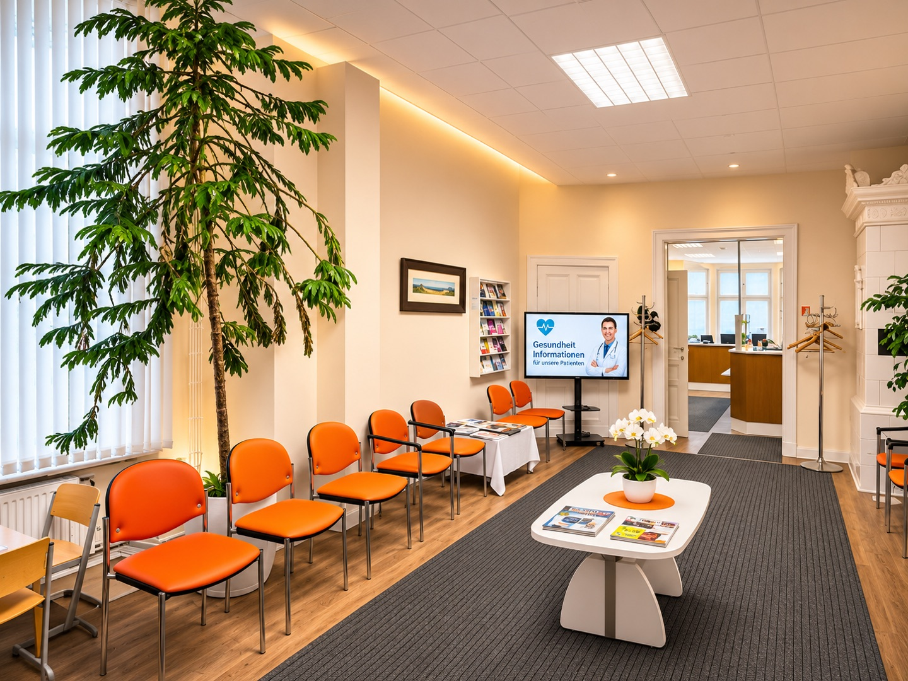

Gute Medizin beginnt mit Zuhören.
Vier Ärzte für Allgemein- und Innere Medizin in der Müllerstraße 138. Wir behandeln akute Beschwerden, begleiten chronische Erkrankungen und kümmern uns um Ihre Vorsorge – auf Deutsch, Englisch und Arabisch.
Online-Buchung über Doctolib, ohne Konto oder App. Sie erhalten eine Bestätigung per E-Mail.
Unser Ärzteteam kennenlernenSprechzeiten
–
Wie können wir Ihnen helfen?
Unsere Leistungen
Von der Erkältung bis zur Langzeitbetreuung: Vieles klären wir direkt bei uns, ohne Umweg über andere Praxen.
So läuft Ihr Besuch ab
Vier Schritte, damit Sie wissen, was Sie erwartet – auch beim ersten Mal.
Welche Vorsorge steht für Sie an?
Geben Sie Ihr Alter ein. Sie sehen, welche Untersuchungen und Impfungen Ihre Krankenkasse übernimmt.
Untersuchungen
Impfungen
Unser Ärzteteam
Vier Ärzte mit unterschiedlichen Schwerpunkten. Wir nehmen uns Zeit und behandeln Sie auf Augenhöhe.
Was Patientinnen und Patienten sagen
Erfahrungen aus unserer Praxis – in ihren eigenen Worten.
Waren Sie bei uns? Ihre Bewertung hilft anderen Patientinnen und Patienten bei der Wahl ihrer Hausarztpraxis.
Häufige Fragen
Ihr Besuch bei uns
Adresse und Kontakt
Müllerstraße 13813353 Berlin
- Telefon: 030 45490303
- E-Mail: praxis@aerztezentrum-sharafi.de
Anfahrt mit öffentlichen Verkehrsmitteln
- U6U Seestraße1–2 Minuten zu Fuß
- Tram M13 und 50Haltestelle U Seestraße
- Barrierefreier ZugangBitte vorher anrufen, wenn Sie Hilfe brauchen
Verbindungen und Gehzeit bitte von der Praxis bestätigen lassen.
Zum ersten Termin mitbringen
Schreiben Sie uns
Für organisatorische Fragen, Rückmeldungen oder Anfragen, die nicht eilig sind. Wir antworten in der Regel innerhalb von zwei Werktagen.
- Eilig oder Termin am selben Tag? Bitte rufen Sie an. 030 45490303
- Bitte senden Sie keine Beschwerden, Befunde oder andere Gesundheitsdaten über dieses Formular.